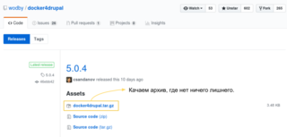
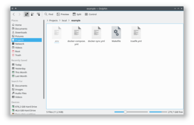
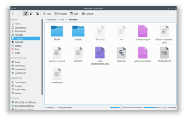
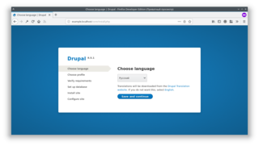
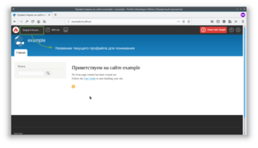
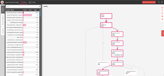

Установка и настройка Docker4Drupal на Ubuntu
Инструкция по установке, настройке и тюнинге Docker4Drupal от и до.
В последние пол года, а может и больше, я перешел на Docker4Drupal с ранее описанного Drupal VM. Всё это время я набивал шишки, эксперементировал, и вот делюсь тем как всё "варить".
Сразу отвечу почему я перешел на вариант с Docker против Vagrant. Ответ один и очень простой — производительность. Докер работает под линуксом очень шустро (читай нативно), шустрее чем на Mac и Windows, точка. На виндоусах он разворачивает полноценную виртуальную машину для своей работы, что по сути, аналог Vagrant и какая между ними разница, не знаю, на Mac, как мне обьяснили, ситуация получше, но все же он доустанавливает какие-то либы и, вроде, часть ядра линукса, для работы и все же, работает медленнее чем под линуксом. На линуксе же, он не ставит вообще ничего, кроме того что требуется контейнеру для его работы. Он просто берет использует напрямую с хоста. В итоге, когда запущенный контейнер проекта от докера простаивает, он не ест практически никаких ресурсов вообще. Более того, докер может динамически забирать себе ресурсы для своей работы прямо с хоста, тогда как вагрант, требует задавать ограничения изначально, и резервирует ресурсы под виртуалку даже если она простаивает. Ну и сам докер, запускается, разворачивается, сворачивается нереально шустро. Когда Drupal VM у меня может стартовать под минуту с уже полноценным проектом, docker стартует с аналогичным проектом за секунд 5-10.
Также у вас может сложиться вопрос, а почему именно Docker4Drupal, ведь есть ещё куча аналогичных проектов заточенных под Drupal, но я пробовал лишь два:
И ведь никто не мешает вам собрать собственную сборочку сервера в докере под друпал и поделиться! Например, такой проектик есть у Chi — Drupal Lemp и у politsin — drupal-docker.
При установке, обратите внимание чтобы версия была Community Edition (CE).
Обновляем информацию о пакетах.
$ sudo apt update
Устанавливаем доп пакеты, которые необходимы для установки докера и поддержки загрузки через https.
$ sudo apt install apt-transport-https ca-certificates curl software-properties-common
Добавляем ключ репозитория Docker
$ curl -fsSL https://download.docker.com/linux/ubuntu/gpg | sudo apt-key add -
Устанавливаем репозиторий Docker
$ sudo add-apt-repository "deb [arch=amd64] https://download.docker.com/linux/ubuntu $(lsb_release -cs) stable"
Обновляем индекс и устанавливаем Docker CE
$ sudo apt update && sudo apt install docker-ce
Проверяем установку Docker
$ sudo docker run hello-world
Если все сделали корректно, то он должен скачать образ и вывести приветственное сообщение Hello from Docker! и немного информации. Если появились ошибки или что-то пошло не так, пройдитесь по пунктам заново.
Теперь мы сделаем так, чтобы докер не требовал sudo каждый раз для запуска. Это опционально, и если вас устраивает, то шаги ниже можно пропускать.
Для начала создаем группу docker
$ sudo groupadd docker
Вероятнее всего, он напишет что такая группа уже существует, ничего страшного в этом нет, просто идем дальше.
Добавляем своего текущего пользователя в данную группу
$ sudo usermod -aG docker $USER
После этого необходимо разлогиниться и залогиниться под юзером в систему обратно. В некоторых случаях может потребоваться полная перезагрузка системы.
Теперь вновь можно проверить, работает ли докер без sudo:
$ docker run hello-world
Он должен вернуть все то же сообщение. На этом установка docker завершена.
Дополнительные действия после установки
По-умолчанию, докер сам должен настроить автозапуск своего демона. Но если по каким-то причинам этого не произошло, или наоборот, вы желаете его отключить, то вот пара команд:
# Добавить автозапуск
$ sudo systemctl enable docker
# Отключить автозапуск
$ sudo systemctl disable docker
Хранение данных в альтернативном месте
Данный раздел рекомендую прочитать всем. Может вам и не нужно будет это делать, но знать об этом точно стоит.
По умолчанию Docker хранит все свои образы и данные для будущих контейнеров в /var/lib/docker, и это может вызвать серьезные проблемы со временем. Причина проблем кроется в том, что некоторые люди, например я, разбивают диск для Linux руками по разным на то причинам. Я, например, при установке линукса, отдаю 30-45 гб. для ядра /, а все остальное отдаю /home (это позволяет переустанавливать линукс или менять дистрибутив за считанные минуты, не теряя никакие данные вообще). Таким образом, директория /var попадает под ограничение 30-45 гб. А контейнера могут весить со временем очень много, и не стоит забывать что система также занимает место, как и другие програмки. У кого-то это может быть вообще два разных диска, где ядро на SSD, а остальное на HDD и место также ограниченно.
Проблема таится в том, что когда кончится место, а с докером оно кончится стремительно быстро, то все ваши контейнера просто откажут в работе. Они не будут отвечать, они не будут старотавать, они просто напросто откажут, вам придется делать всё что тут написано, и заботиться о переносе данных вручную и надеется что все пройдет гладко. И это может произойти в процессе работы с докером, и вы, возможно, даже не поймете почему ваш проект развалился и перестал отвечать, или в момент установки нового пакета или обновления системы, где с кэшем и временными файлами места просто не хватит и опять же, все приведет к краху.
Если у вас аналогичная ситуация, то нужно менять место хранения данных докера. Если у вас общий раздел для всех данных и ядра, вам все что написано ниже в данном разделе не нужно и можно пропускать.
Для того чтобы изменить местоположение файлов для докера, нам необходимо поменять значение по умолчанию для демона. Мы можем переопределять значения для демона докера при помощи файла daemon.json, который нужно создать в папке /etc/docker. В данном файлике в формате JSON достаточно задать переменную graph, где значением будет путь до места хранения файлов докера.
Давайте это сделаем:
# Создаем файл
sudo touch /etc/docker/daemon.json
# Открываем его на правку
sudo nano /etc/docker/daemon.json
Добавляем значение
{
"graph": "/home/USERNAME/.docker"
}
Сохраняем, закрываем.
Путь можете указать какой вам удобно. Я указываю домашнюю директорию своего юзера и скрытую папку .docker. Если папки нет, докер создаст её сам и все необходимые вложенные.
После чего необходимо перезапустить демон докера чтобы он увидел изменения.
$ sudo service docker restart
И для того чтобы убедиться что всё ок, запустите тест hello world заново. Если вы не переносили уже имеющиеся данные из /var/lib/docker, то он заново скачает образ и выведет сообщение.
Docker Compose — это небольшая обертка для докера, которая позволяет описывать контейнеры в конфигурационном файле docker-compose.yml и управлять ими одновременно через данную утилиту. Это необходимо установить, потому что это во-первых, удобно, а во-вторых, требуется для Docker4Drupal.
Установка Docker Compose
# Качаем
$ sudo curl -L https://github.com/docker/compose/releases/download/1.21.0/docker-compose-$(uname -s)-$(uname -m) -o /usr/local/bin/docker-compose
# Делаем метку выполняемого файла
$ sudo chmod +x /usr/local/bin/docker-compose
# Проверяем
$ docker-compose --version
Если вернул версию, всё готово.
Docker4Drupal — это по-сути, парочка конфиг файлов с настройками для Docker Compose, которые, под капотом, дергают определенные контейнера и связывают их между собой. Поэтому установка проста настолько, насколько это только реально.
Вариантов использования их конфиг файлов может быть уйма, тут уж как вам удобнее и лучше. Я покажу так, как это устроено у меня.
Для проектов у меня в домашней директории есть папка Projects, внутри которой ещё несколько: github (для всяких контриб модулей и прочих разработок), local (для локальной разработки), remote (подключенные внешние проекты по (S)FTP). Как не сложно догадаться, разработка ведется в папке local, внутри которой, у меня есть папка для каждого проекта. В итоге я имею примерно такой путь ~/Projects/local/project-name. И вот внутрь папки проекта я кидаю конфиги Docker4Drupal.
Можете использовать всё по своему усмотрению, откуда вызывать - нет никакой разницы, я же приведу пример, создав папку для тестового проекта: ~/Projects/local/example.
После того как создали папку для своего проекта, необходимо скачать Docker4Drupal. Для этого переходим в их репозиторий, а затем, на вкладку releases и качаем самый последний релиз. На момент написания статьи, это 5.0.4, внутри которого есть архив docker4drupal.tar.gz, вот его то нам нужно скачать. 
Распаковываем архив в нашу папку с будущим проектом. Получится примерно следующее: 
И на этом "установка" завершена.
Из коробки всё само заведется и заработает, но я правлю конфиги под себя и покажу как это делаю, и какие полезные изменения можно внести.
Для базовой настройки нам интересны всего два файла .env (скрытый файл, в Ubuntu чтобы показать скрытые файлы CTRL + H, в KDE Dolphin F8) и docker-compose.yml.
Начем с .env, в нем настраиваются все базовые настройки для контейнеров. Их название, версии и доступы.
Первым делом стоит поменять название проекта под своё, чтобы контейнера не перепутались. Я указываю название такое же, как и папки проекта. Я меняю PROJECT_NAME, в нашем случае на example. Данная переменная может содержать только латиницу, цифры и знак подчеркивания. Так что тире заменяйте на подчеркивание или вообще пишите слитно. Далее я меняю PROJECT_BASE_URL, это адрес, по которому будет открываться сайт, а также базовый адрес для остальных поддоменов типа phpmyadmin и прочего. Я аналогично, указываю в нашем случае example.localhost чтобы было проще вводить. Больше я ничего не меняю.
Ниже можно настроить специфичные версии для каждого из контейнеров. Для этого достаточно раскомментировать нужную строку с переменной, убрав в начале #, а затем закомментировать ту, что использовалась ранее, добавив #.
Например, на момент написания статьи, раздел настройки PHP имеет следующий вид:
### --- PHP ----
PHP_TAG=7.1-dev-4.2.5
#PHP_TAG=7.0-dev-4.2.5
#PHP_TAG=5.6-dev-4.2.5
#PHP_TAG=5.3-dev-4.2.5
#PHP_TAG=7.1-dev-macos-4.2.5
#PHP_TAG=7.0-dev-macos-4.2.5
#PHP_TAG=5.6-dev-macos-4.2.5
#PHP_TAG=5.3-dev-macos-4.2.5
Т.е. по умолчанию, версия php будет 7.1. Если вы хотите 5.6, то файл будет выглядить следующим образом:
### --- PHP ----
#PHP_TAG=7.1-dev-4.2.5
#PHP_TAG=7.0-dev-4.2.5
PHP_TAG=5.6-dev-4.2.5
#PHP_TAG=5.3-dev-4.2.5
#PHP_TAG=7.1-dev-macos-4.2.5
#PHP_TAG=7.0-dev-macos-4.2.5
#PHP_TAG=5.6-dev-macos-4.2.5
#PHP_TAG=5.3-dev-macos-4.2.5
Настройки версий можно менять в дальнейшем, после чего надо перезапускать контейнеры. Но вот название проекта я бы менять уже не рискнул.
Теперь перейдем к настройке docker-compose.yml.
В первую очередь, в данном файле нас интересует конфиг traefik в самом низу, там где раздел ports и установлено '8000:80' я меняю на '80:80'. Если этого не поменять, то сайт будет открываться по адресу example.com:8000, если поменять, то просто по example.com. Согласитесь, удобнее.
Затем, я включаю Adminer, для этого надо найти его раздел в файле и убрать от всех его строк комментарии #. Получится так:
adminer:
container_name: "${PROJECT_NAME}_adminer"
image: wodby/adminer:$ADMINER_TAG
environment:
ADMINER_SALT: adminer-salt
labels:
- 'traefik.backend=adminer'
- 'traefik.port=9000'
- 'traefik.frontend.rule=Host:adminer.${PROJECT_BASE_URL}'
Если вы предпочитаете PhpMyAdmin или хотите оба, то расскоменнтируйте pma раздел аналогичным обарзом. Тут же вы можете заметить в последней строке где задается по какому хосту будет открываться adminer. В нашем случае это превратиться в adminer.example.localhost (если вы поменяли порт 8000 на 80, если нет, то adminer.example.localhost:8000).
По такому принципу включаются дополнительные контейнеры, вы сами можете наблюдать какие там есть, и если какой-то нужен, или хотите потестить, то всё так просто. После изменения этого файла, проект надо рестаровать чтобы изменения вступили в силу.
Также в docker-compose.yml есть две очень важные настройки. Первая находится в разделе php.volumes. Там, вы можете заметить, значение по умолчанию ./:/var/www/html. Это маппинг откуда:куда. Если опираться на стандартное значение, то его следует понимать следующим образом. Файлы из текущей (./) директории, нужно переносить в директорию /var/www/html контейнера php. Это настройка синхронизации исходного кода с контейнером. Папка "откуда", указывается относительно текущего местоположения docker-compose.yml.
Вторая аналогичная настройка есть в nginx, её тоже не забудьте поменять, если изменили в php. В nginx также находится ещё одна очень важная настройка nginx.environment.NGINX_SERVER_ROOT. Она отвечает за то, где в контейнере php находится index.php файл сайта. По умолчанию она имеет значение /var/www/html/web. Во-первых, если вы меняли место назначения файлов, это также должно быть изменено. Во-вторых, оно настроено под Drupal 8 drupal-project композер установку. Если у вас Drupal 7 или стандартная установка Drupal 8, то значение нужно поменять на /var/www/html.
На этом настройка Docker4Drupal завершена. Правьте как хотите под себя, я делаю по минимуму.
Docker4Drupal в PHP контейнере из коробки поставит вам composer, drupal console и drush launcher. Для их вызова, лучше всего, сделать алиасы.
Для этого надо добавить три алиаса, называйте их как хотите, я называл их обычными именами. Если вы не меняли шел в системе, то следующие правки вносите в ~/.bash_profile (если нету, то создайте touch ~/.bash_profile), если у вас Zsh, то следующие строки вносите в ~/.zshrc.
alias drush="docker-compose exec php drush"
alias drupal="docker-compose exec php drupal"
alias composer="docker-compose exec php composer"
Можно их добавить снизу файла, сохранить, закрыть и прописать source ~/.bash_profile или же source ~/.zshrc. В зависимости куда внесли алиасы.
Теперь, набирая в консоли drush, он будет вызывать команду docker-compose exec в контейнер php где он вызовет drush, а он, в свою очередь, уже вызовет драш. Аналогично и с остальными.
Данные команды будут работать в корне проекта, а также во всех вложенных его папках, за пределами проекта будет выдавать ошибку что docker-compose.yml не найден. Поэтому, перед тем как выполнять эти команды, зайдите в терминале в папку с проектом cd ~/Projects/local/example и вызывайте drush status или что вам нужно.
Запуск, установка, отключение, удаление
Если все установили и настроили как следует, то можно проверять.
Для того чтобы запустить сервер, заходите при помощи терминала в директорию с проектом cd ~/Projects/local/example и вызываете команду запуска docker-compose up -d (параметр -d отключит вывод сообщений после запуска и отдаст контроль над терминалом). У вас всё скачается, настроится и запустится. И по адресу example.localhost должна открываться страница и писать "File not found", потому что index.php по пути /var/www/html/web не обнаружен.
Если у вас пишет что соединение не удалось установить, вероятнее всего у вас Firefox или же ещё какие-то особенности. Для этого просто достаточно добавить в /etc/hosts записи для всех нужных вам доменов 127.0.0.1 example.localhost и, например, если включили adminer 127.0.0.1 adminer.localhost. Адреса начнут работать.
Для примера мы поставим Drupal 8 drupal-project. Так как стандартные настройки полностью под него подходят, и делается это крайне быстро и легко. Да и вообще drupal-project крутейшая штука, я, если интересно, могу о нем расписать, хотя там все предельно понятно и просто.
Для этого достаточно выполнить пару команд в терминале
# Переходим в папку проекта, если ещё не там или вышли
$ cd ~/Projects/local/example
# Клонируем проект
$ git clone https://github.com/drupal-composer/drupal-project.git
# Переносим клонируемые файлы в нашу основную директорию
$ cp -R drupal-project/* .
# Удаляем файлы которые скопировали из старой папки
$ rm -rf drupal-project/
У вас должно получиться примерно следующее. 
Так как это drupal-project и он не содержит в себе ядра друпала из коробки, мы устанавливаем его со всеми зависимостями.
Для того чтобы это сделать просто пишем composer install и ждём окончания. Не будет лишним сразу помочь создать ему папку config/sync, на которую он может ругаться в начале установки, для этого просто напишите mkdir -p config/sync.
После окончания установки композера всё готово. Установщик Drupal будет доступен по адресу example.localhost. 
Важно!. В процессе установки, или, если вы разворачиваете готовый проект, в качестве хоста для базы данных нужно указывать mariadb, вместо localhost.
Для того чтобы остановить сервер просто пишем docker-compose stop. Он выключит все контейнеры и всё, сервер больше не работает. Если захотите опять запустить его, просто пишите docker-compose up -d и сайт снова заработает.
Что делать если данные устарели, проект больше не нужен, и нужно освободить место на диске? Первым делом, нужно удалить все контейнера докера, а уже затем удалять папку проекта, иначе у вас в системе останутся мертвые данные от проекта.
Для того чтобы удалить все данные по текущему проекту в докере, достаточно остановить сервер и написать docker-compose rm, он спросит подтверждение, убедитесь что удаляются файлы нужного проекта, это будет видно по названиям в подтверждении, если всё ок, соглашайтесь, они удалятся. После чего, уже можно удалять папку проекта, если она больше не нужна и у вас не останется никаких следов текущего проекта.
Также есть ещё одна команда, docker-compose halt. Её можно вызывать когда сервер запущен, и вы решили его удалить. Он выполнит команду docker-compose stop и docker-compose rm за вас.
Будьте очень аккуратны при удалении, данные будет не восстановить.
Дополнительные конфигурации и возможности
Данные конфигурации необязательны и только чтобы вы знали как, где и если потребуется, чтобы быстро сориентироваться.
В 8-ке xdebug порой необходим как воздух, с ним очень легко отследить как выполняется определенная часть кода и найти ошибку. К нашему счастью, с Docker4Drupal это делается очень просто.
Первым делом, рекомендую поставить расширение для браузера Xdebug helper Chrome \ Firefox. Он позволит простым нажатием в браузрной строке включать режим отладки.
Для того чтобы включить Xdebug в Docker4Drupal, заходим в файл docker-compose.yml и находим раздел php. Там будут закомментированы две переменные PHP_XDEBUG и PHP_XDEBUG_DEFAULT_ENABLE. Нам необходимо их раскомментировать.
php:
image: wodby/drupal-php:$PHP_TAG
container_name: "${PROJECT_NAME}_php"
environment:
PHP_SENDMAIL_PATH: /usr/sbin/sendmail -t -i -S mailhog:1025
DB_HOST: $DB_HOST
DB_USER: $DB_USER
DB_PASSWORD: $DB_PASSWORD
DB_NAME: $DB_NAME
DB_DRIVER: $DB_DRIVER
## Read instructions at https://wodby.com/stacks/drupal/docs/local/xdebug/
PHP_XDEBUG: 1
PHP_XDEBUG_DEFAULT_ENABLE: 1
# PHP_XDEBUG_REMOTE_CONNECT_BACK: 0
# PHP_IDE_CONFIG: serverName=my-ide
# PHP_XDEBUG_REMOTE_HOST: 172.17.0.1 # Linux
# PHP_XDEBUG_REMOTE_HOST: 10.254.254.254 # macOS
# PHP_XDEBUG_REMOTE_HOST: 10.0.75.1 # Windows
volumes:
- ./:/var/www/html
## For macOS users (https://wodby.com/stacks/drupal/docs/local/docker-for-mac/)
# - ./:/var/www/html:cached # User-guided caching
# - docker-sync:/var/www/html # Docker-sync
## For Xdebug profiler files
# - files:/mnt/files
После чего перезапускаем контейнера, если они запущены и запускаем заново docker-compose stop && docker-compose up -d.
После запуска, Xdebug начнет работу. В браузерном расширении ставим зеленого жука, в IDE включаем режим дебага и пользуемся.
Xdebug очень сильно снижает производительность даже в режиме ожидания. Чем крупнее проект, тем сильнее будет ощущаться его присутствие. Так что после успешного дебага под свои нужды, я рекомендую комментировать конфиги которые его включают и перезапускать контейнера. Включайте только когда действительно нужно.
Blackfire — это сервис профилирования проекта от создателей Symfony. Для локальных проектов он бесплатный. Его очень круто использовать, когда на проекте есть какие-то тормоза, которых раньше не было. Он помогает вам найти узкие места в проекте, а затем провести ещё одну проверку, и сравнить насколько изменился результат и были ли внесенные изменения действенные.
Для его использования, нам также потребуется браузерное расширение Blackfire Companion Chrome \ Firefox, а также, вы должны зарегистрировать в данном сервисе.
После регистрации в сервисе вам нужно нажать на свою аватарку, зайти в Account и получить Server ID и Server Token.
После чего заходим в docker-compose.yml, расскомментируем соответствующий раздел и укажем BLACKFIRE_SERVER_ID и BLACKFIRE_SERVER_TOKEN в соответствии с тем что вам выдали в профиле.
blackfire:
image: blackfire/blackfire
container_name: "${PROJECT_NAME}_blackfire"
environment:
BLACKFIRE_SERVER_ID: XXXXX
BLACKFIRE_SERVER_TOKEN: YYYYY
Также в раздел php нужно добавить переменную PHP_BLACKFIRE со значением 1. Видимо в новой версии про неё забыли, но без неё не заведется.
php:
image: wodby/drupal-php:$PHP_TAG
container_name: "${PROJECT_NAME}_php"
environment:
PHP_SENDMAIL_PATH: /usr/sbin/sendmail -t -i -S mailhog:1025
DB_HOST: $DB_HOST
DB_USER: $DB_USER
DB_PASSWORD: $DB_PASSWORD
DB_NAME: $DB_NAME
DB_DRIVER: $DB_DRIVER
## Read instructions at https://wodby.com/stacks/drupal/docs/local/xdebug/
# PHP_XDEBUG: 1
# PHP_XDEBUG_DEFAULT_ENABLE: 1
# PHP_XDEBUG_REMOTE_CONNECT_BACK: 0
# PHP_IDE_CONFIG: serverName=my-ide
# PHP_XDEBUG_REMOTE_HOST: 172.17.0.1 # Linux
# PHP_XDEBUG_REMOTE_HOST: 10.254.254.254 # macOS
# PHP_XDEBUG_REMOTE_HOST: 10.0.75.1 # Windows
PHP_BLACKFIRE: 1
Перезапускаем контейнера docker-compose stop && docker-compose up -d и всё готово!
Заходим на страницу где хотите профилировать. Жмете на иконку расширения, если всё корректно, будет кнопка "Profile!". Жмете на неё и начнется профилирование. Вы можете сразу тут задать название для своего профилирования. 
При нажатии на время выполнения или другие кнопки, он откроет страницу с результатами профилирования. 
Например, на скриншоте выше, дерево вызова для главной страницы. Видно, что вызов занял 253ms и в пике требовал 9.18MB оперативной памяти.
По различным причинам, вам может потребоваться HTTPS для локалки. Например, захотите написать авторизацию через OAuth 2.0 на локалке, а без HTTPS этого сделать просто невозможно, так как https требуется на уровне OAuth 2.0 и все запросы с http, даже с локалки, будут просто откланяться. Что же делать в таком случае? И тут все просто!
Первым делом, нам надо сгенерировать самоподписанный сертификат для домена. Это очень просто, можно воспользоваться сервисом Self-Signed Certificate Generator. Заходим на сайт, вводим домен, в нашем примере example.localhost и жмем Generate. В результате он выдаст вам 2 ссылки на файлы example.localhost.key и example.localhost.cert. Их вам нужно скачать.
Вы также можете сгенерировать самостоятельно без всяких сайтов. Для этого достаточно ввести две команды заменив домен на нужный:
$ openssl genrsa -out example.localhost.key 2048
$ openssl req -new -x509 -key example.localhost.key -out example.localhost.cert -days 3650 -subj /CN=example.localhost
Эти файлы придется положить в проект. Я предлагаю сделать папку certs внутри проекта и положить оба файла туда. После чего, не забудьте эту папку добавить в .gitgnore (правило certs/).
Тогда как оба файла будут в этой папке, открываем docker-compose.yml. Находим настройки для traefik в самом низу и меняем command на новое значение (будет в примере ниже), добавить порты для SSL 443, а также подключить папку с сертификатами.
traefik:
image: traefik
container_name: "${PROJECT_NAME}_traefik"
command: -c /dev/null --web --docker --logLevel=INFO --defaultEntryPoints='https' --entryPoints="Name:https Address::443 TLS:/certs/example.localhost.cert,/certs/example.localhost.key" --entryPoints="Name:http Address::80"
ports:
- '80:80'
- '443:443'
# - '8080:8080' # Dashboard
volumes:
- /var/run/docker.sock:/var/run/docker.sock
- ./certs:/certs
Не забудьте заменить название файлов на свои, и папку указать нужную, если вы решили хранить в другом месте.
Перезапускаем контейнера docker-compose stop && docker-compose up -d.
Теперь сайт будет открываться по https://example.com.
{kind=link}
{kind=link}
{kind=link}
{kind=link}
{kind=link}
{kind=link}